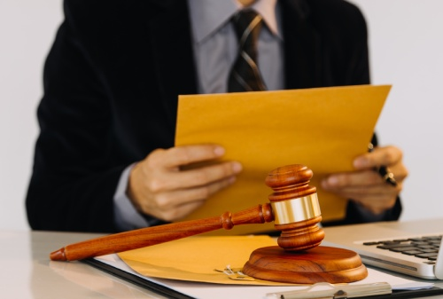

How To Choose The Best Patent Attorney
To Protect Your Invention
To Protect Your Invention
Safeguarding your invention is a crucial step in transforming a creative concept into a valuable asset. Whether you’ve invented a novel product, crafted a distinctive technology, or developed a more efficient production method, acquiring patent protection is essential to prevent others from manufacturing, utilizing, or selling your invention without permission. Nevertheless, the patent application process can be complex, involving technical specifics, legal stipulations, and strict timelines.
An experienced patent attorney can assess your invention, create a robust patent application, and assist you throughout the necessary legal procedures for securing protection.
Why Do You Need a Patent Attorney?
A patent lawyer focuses on intellectual property law and is well-versed in the legal and technical aspects necessary for securing patents.
- Patent searches: Locating existing inventions that might impact the likelihood of your application being approved.
- Application preparation: Creating comprehensive descriptions and patent claims to safeguard your invention.
- Legal compliance: Verifying that your application adheres to the requirements set by the relevant patent office.
- Office action responses: Responding to any objections or inquiries from patent examiners.
- Patent enforcement: Providing guidance on protecting your rights if someone infringes on your patent.

Key Factors to Consider When Choosing the Best Patent Attorney
1. Check Qualifications and Credentials
Begin by checking the credentials and professional registration of the attorney. The requirements for patent practice vary by country. For instance, in the United States, only registered patent practitioners with the proper qualifications can represent applicants at the USPTO. In India, registered patent agents can represent applicants before the Indian Patent Office, while attorneys may offer a wider range of legal counsel depending on their qualifications.
Ensure that the professional is authorized to provide the services you require in your desired jurisdiction.
2. Look for Relevant Industry Experience
Select a Patent attorney with expertise in the technical domain of your invention. Depending on your innovation, having experience in areas such as software, electronics, biotechnology, mechanical engineering, or pharmaceuticals can be particularly beneficial.
An attorney who is knowledgeable about your industry is more likely to grasp intricate technical details and determine which features of your invention require the most robust protection.
3. Evaluate Patent Drafting Skills
Patent claims establish the legal limits for protecting an invention. If claims are poorly written, they might fail to cover crucial aspects or could be easily challenged.
When considering potential attorneys, inquire about their strategy for drafting patents, their previous experience with comparable inventions, and their skill in clarifying complicated legal ideas. A robust patent application needs to harmonize technical precision with adequate legal safeguards.
4. Review Reputation and Client Feedback
Investigate the lawyer's qualifications, client reviews, and any publicly accessible information regarding their experience. Additionally, don't hesitate to request references when suitable.
Seek indicators of effective communication, dependability, meticulousness, and familiarity with cases like yours. Steer clear of choosing a lawyer based solely on their advertisements or claims of guaranteed patent approval.
5. Compare Fees and Services
The fees charged by patent attorneys differ based on factors such as the intricacy of the case, geographic area, and the specific services rendered. It’s advisable to ask for a detailed written estimate outlining anticipated expenses.
Be sure to check if the quote includes costs for patent searches, drafting documents, filing applications, responding to examiners, and any further prosecution tasks. Note that government filing fees, international application costs, and maintenance fees might be listed separately.
Questions to Ask Before Hiring a Patent Attorney
- Have you worked with innovations in my area of expertise?
- What strategy do you suggest for pursuing a patent?
- How do you plan to analyze current patents and comparable inventions?
- What costs and timelines should I anticipate?
- Who will be responsible for drafting my application and keeping me informed?
- What measures will you take to ensure the confidentiality of my invention?
These inquiries can assist you in evaluating the lawyer's experience, interaction approach, and overall fit for your needs.
Common Mistakes to Avoid
Do not disclose sensitive technical information unless you fully comprehend the confidentiality agreements that are established. Revealing such information publicly could jeopardize patent rights in certain areas, so it’s wise to consult with an expert prior to making your invention public or showcasing it.
Additionally, do not presume that conducting a patent search ensures your application will be approved, nor should you think that having a patent will entirely restrict competitors. Be cautious of professionals who claim guaranteed outcomes or do not discuss the potential risks involved.